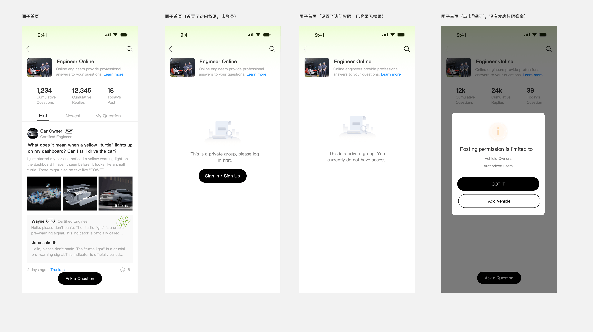
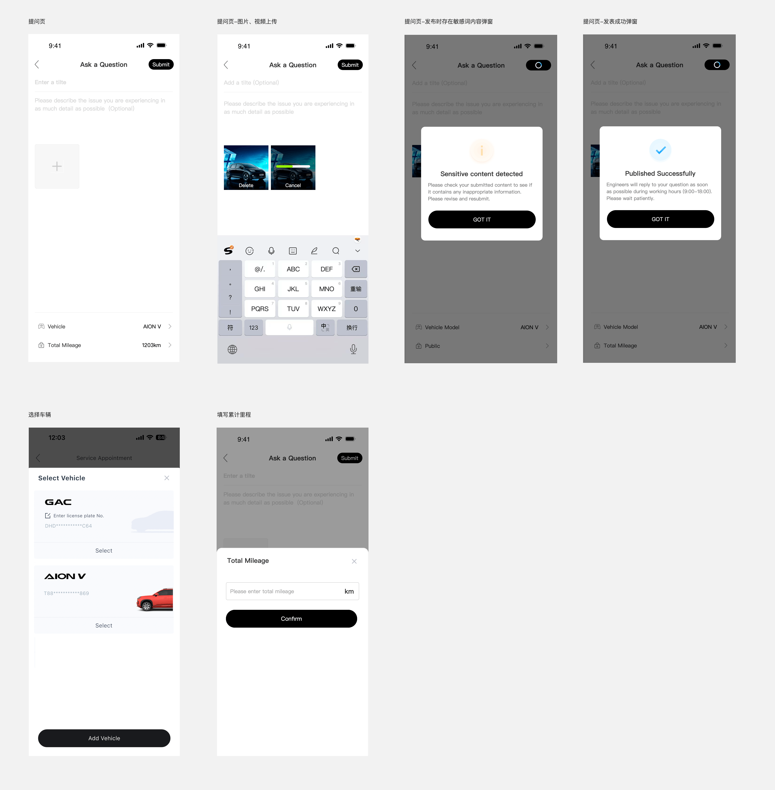
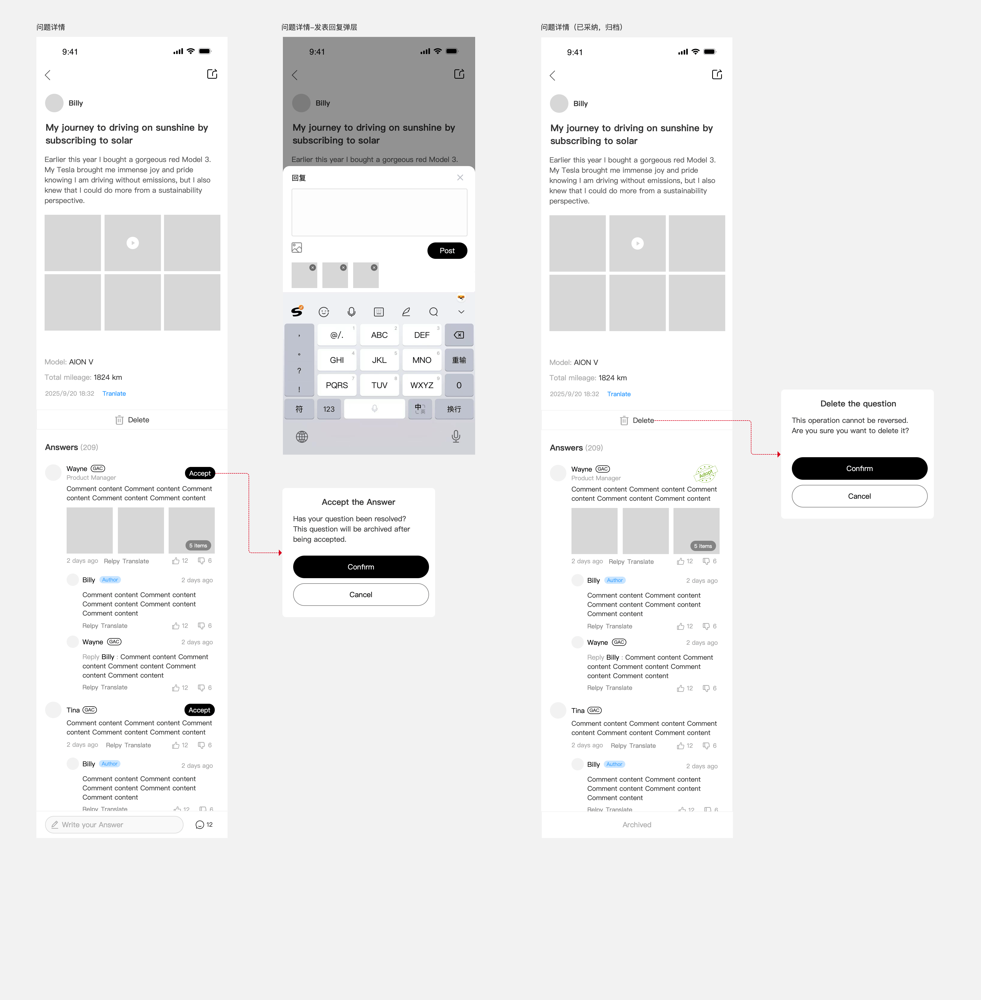
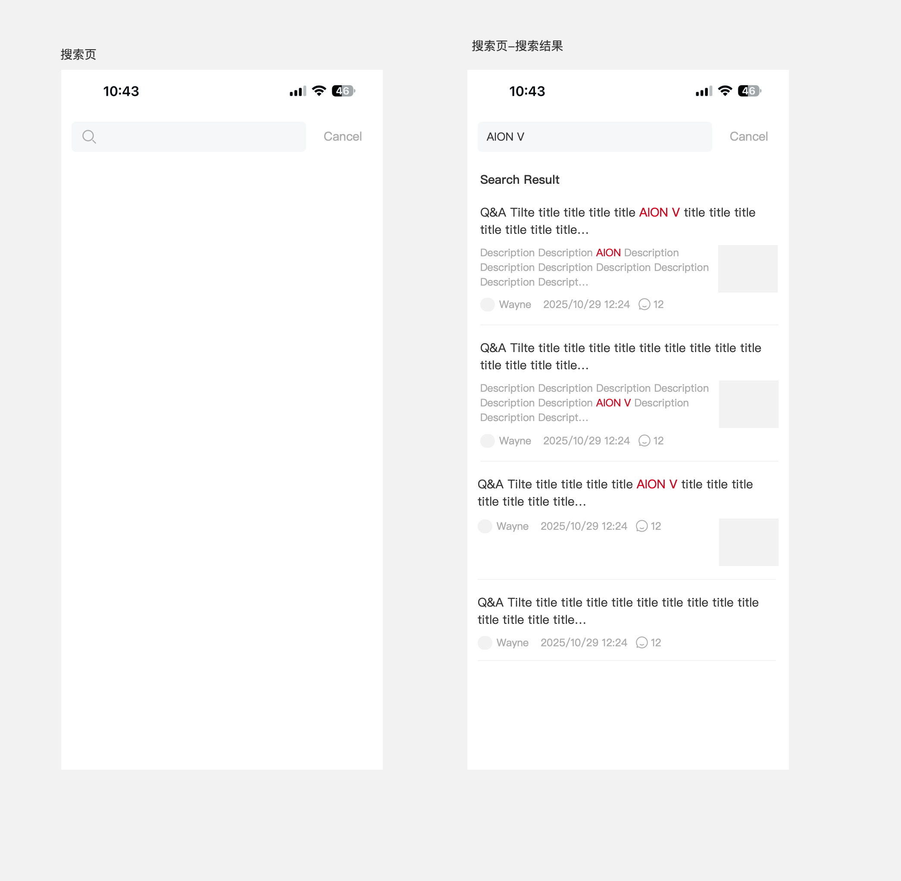
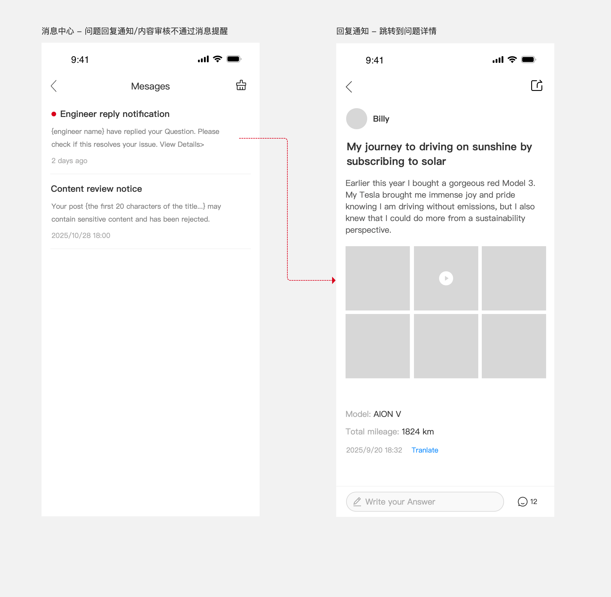
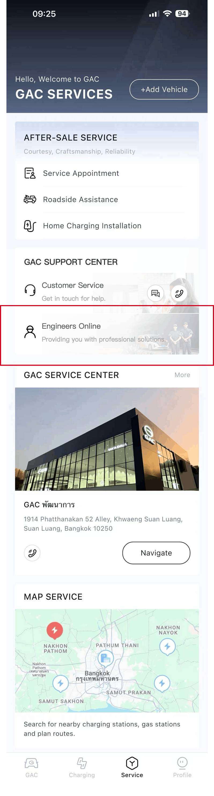
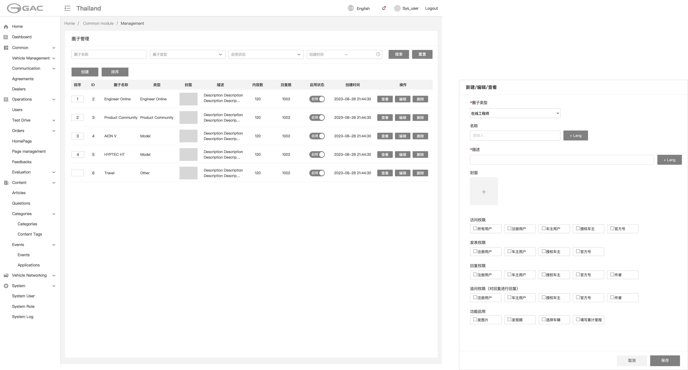
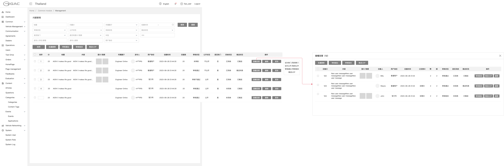
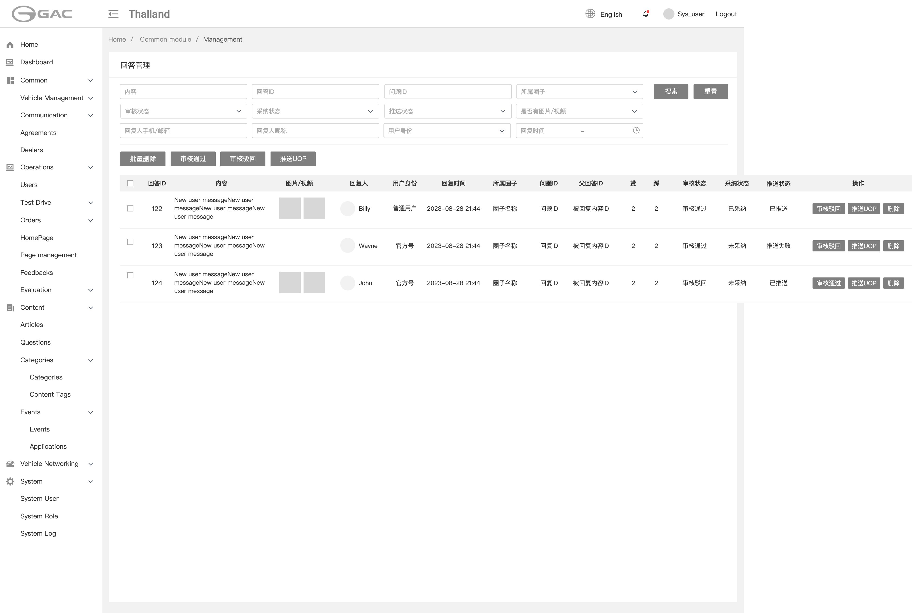
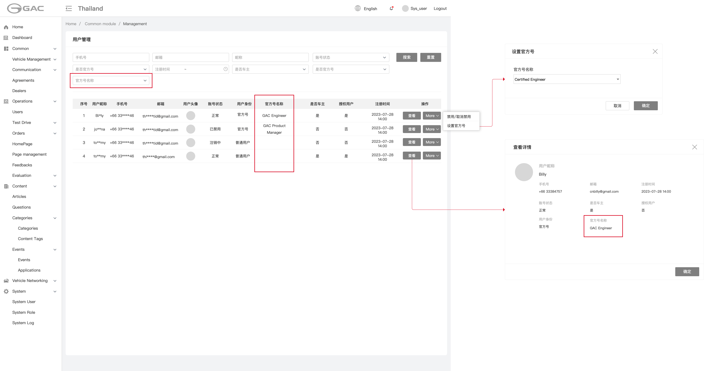

产品概述
5 分钟看懂 Engineer Online 在做什么、为什么做、给谁用
核心问题
核心目标
关键特性
目标用户
车主用户 / 授权车主
官方号（工程师 / 产品经理）
后台管理员（运营）
普通用户 / 游客
UOP 平台（外部）
外部服务（FCM / Translate / OSS）
术语表
| 术语 | 英文 | 定义 | 备注 |
|---|---|---|---|
| 圈子 | Group | 社区的基本组织单元，每个圈子有独立配置、权限与内容 | "在线工程师"是一个圈子实例 |
| 问题 | Question | 用户发起的提问帖子，可含标题、描述、图片、车型 | 区别于文章 / 动态 |
| 回答 | Answer | 针对问题的回复，支持图片、视频，可被采纳 | 顶层回答仅限官方号 |
| 采纳 | Accept | 提问者将某个回答标记为最佳答案 | 每问仅 1 条；采纳后关闭追问 |
| 追问 | FollowUp | 用户对工程师回答及其二级回复发起的后续回复 | 最多两级嵌套 |
| 官方号 | OfficialAccount | 经品牌认证的工程师或产品经理账号 | V 标识 + 品牌标签 |
| 车主用户 | CarOwner | 已绑定车辆的用户 | 可获取车型 / 里程 |
| 授权车主 | AuthorizedOwner | 经过验证的车辆所有者 | 在线工程师圈子默认权限同车主 |
| 审核 | Review | 用户提问/回答的内容审核状态 | PENDING / APPROVED / REJECTED |
| 推送 UOP | UOP Sync | 提问/追问成功后将数据同步到 UOP 系统 | 未推送 / 已推送 / 推送失败 |
| 热门 | Hot | 运营在管理后台标记为热门的问题 | 设为热门后才出现在首页热门列表 |
| 翻译 | Translate | 将内容翻译为用户当前语言 | Google Cloud Translation，缓存 7 天 |
| UOP | UOP | 统一运营平台，问题/回答/状态的同步目标系统 | 外部系统 |
| FCM | FCM | Firebase Cloud Messaging，跨平台 Push 通道 | iOS / Android 同步推送 |
| 敏感词校验 | ContentFilter | 提交时调用 UOP 接口进行内容安全检测 | 不通过则拒绝提交 |
业务流程
端到端流转与关键业务流程


sequenceDiagram
autonumber
participant U as 车主
participant App as App 前端
participant BE as community-service
participant UOP as UOP 平台
participant Noti as 消息服务
U->>App: 填写问题（标题/描述/图片/车型/里程）
App->>BE: POST /api/v1/groups/{id}/questions
BE->>UOP: 敏感词校验
alt 校验不通过
UOP-->>BE: 拒绝
BE-->>App: 4007 CONTENT_SENSITIVE
else 校验通过
BE->>BE: 保存为 PENDING
BE->>UOP: 推送到内容审核平台
UOP-->>BE: 异步审核结果
alt 通过
BE->>BE: review_status = APPROVED
else 驳回
BE->>Noti: 通知作者（驳回原因）
end
end
sequenceDiagram
autonumber
participant U as 提问者
participant App as App 前端
participant BE as community-service
participant Noti as 消息服务
U->>App: 点击 Accept
App->>BE: POST /api/v1/answers/{id}/accept
BE->>BE: 校验：仅问题作者可采纳
BE->>BE: 标记 is_accepted = true
BE->>BE: 关闭该问题的追问入口
BE->>Noti: 通知回答者（被采纳）
Noti->>U: App Push + 站内消息
功能架构
9 个模块按"平台层 / 在线工程师业务层"两层组织，全部归属"在线工程师"圈子
模块详情
点击左侧模块查看：核心功能、关联实体/API、Permission Code、关键业务规则、原型
圈子管理与配置
运营在管理后台创建/编辑/启停/删除圈子，控制每个圈子的内容类型、功能开关和权限矩阵。
📋 核心功能
- 圈子列表筛选（名称 / 类型 / 启用状态 / 创建时间）
- 创建圈子（类型 / 名称 / 描述 / 封面 / 多语言）
- 权限矩阵配置（访问 / 发表 / 回复 / 追问）
- 功能开关（回复 / 图片 / 视频 / 选择车辆 / 累计公里数）
- 批量排序 · 启停 · 删除（含二次确认）
🔗 关联实体 / API
Group/GroupTranslationGET /api/v1/admin/groupsPOST /api/v1/admin/groupsGET /api/v1/groups/{id}/config
🔐 Permission Code
group:view:anygroup:manage:any
📐 关键业务规则
- BR-5.1-01圈子名称在同一系统内不可重复
- BR-5.1-02圈子类型创建后不可修改
- BR-5.1-03停用圈子后，移动端不再展示该圈子入口，已有内容保留但不可访问
- BR-5.1-04删除圈子前需确认，圈子内有内容时需二次确认"删除圈子将同时删除所有内容"
- BR-5.1-05排序字段控制圈子在移动端的展示顺序，数字越小排越前
- BR-5.1-06多语言名称和描述中，至少需填写一种语言
✅ 验收标准（AC）
- AC-5.1-01Given 管理员在圈子管理页 When 点击创建并填写完整信息后点击发布 Then 圈子创建成功，列表中出现新圈子
- AC-5.1-04Given 已存在名为"Engineer Online"的圈子 When 创建同名圈子 Then 提示"圈子名称已存在"，不允许创建
- AC-5.1-05Given 圈子内有 100 条问题 When 管理员删除圈子 Then 弹出确认框提示内容数量，确认后圈子及所有内容删除
- AC-5.1-06Given 圈子的回复权限设为"官方号" When 普通车主尝试回复 Then 不显示回复入口
圈子首页
用户进入"在线工程师"社区首页，浏览问题列表，支持 Hot / Newest / My Question 三种排序。
📋 核心功能
- 圈子简介（封面 / 名称 / Learn more）
- 统计数据（累计问题 / 累计回复 / 今日发帖）
- Tab 切换：Hot / Newest / My Question
- 问题卡片 + 已采纳回答预览
- 底部浮动 Ask a Question 按钮
🔗 关联实体 / API
QuestionGET /api/v1/groups/{groupId}/questionsGET /api/v1/groups/{groupId}/stats
🔐 Permission Code
question:view:anyquestion:view:own
📐 关键业务规则
- BR-5.2-01仅显示审核通过且公开的问题
- BR-5.2-02问题卡片中的回答预览最多显示2条，已采纳的回答优先显示，无已采纳则按回复时间倒序显示
- BR-5.2-05My Question Tab 需要登录，未登录时点击该 Tab 触发登录引导
- BR-5.2-06无限滚动加载，每次加载 20 条，无更多数据时显示"No more questions"
- BR-5.2-07最热Tab访问权限：若圈子配置为部分用户，未登录提示"该圈子设置了访问权限，请先登录"，已登录提示"该圈子仅限以下用户访问"；配置为全部用户则无需登录
- BR-5.2-03统计数字格式化规则：显示具体数字，格式带千分号（如 1000→1,000）
- BR-5.2-04发布时间采用相对时间显示（Just now / N m ago / N h ago / N d ago / YYYY-MM-DD HH:mm）
- BR-5.2-08问题卡片中的最新回答区域最多显示2条，已采纳优先 / 时间倒序
- BR-5.2-09提问按钮为底部浮动按钮，无发表权限则弹窗提示
✅ 验收标准（AC）
- AC-5.2-01Given 用户进入首页 When 页面加载完成 Then 显示 Hot Tab 下的问题列表，统计数据正确
- AC-5.2-03Given 问题有已采纳的回答 When 在首页显示问题卡片 Then 回答预览区显示已采纳的回答，并带 Adopt 标记
- AC-5.2-04Given 用户未登录 When 点击 My Question Tab Then 跳转到登录页
- AC-5.2-06Given Hot Tab 下无任何问题 When 页面加载 Then 显示空状态引导
问题发布（提问）
车主填写标题、描述、图片，关联车型与里程后发布提问；后端调 UOP 敏感词校验通过后入审核队列。
📋 核心功能
- 标题（5-400 字符必填）+ 描述（≤10000 字符选填）
- 图片+视频合计 ≤9 个，OSS 直传 + 客户端压缩
- 车型 + 总里程（圈子启用时必填）
- 敏感词预校验 → 入审核队列 → 仅作者可见
- 提交中按钮 loading；返回时未保存内容二次确认
🔗 关联实体 / API
QuestionPOST /api/v1/groups/{groupId}/questionsPOST /api/v1/upload/presignPOST /api/v1/content/check
🔐 Permission Code
question:create:any
📐 关键业务规则
- BR-5.3-01标题为必填，5-400 字符
- BR-5.3-03图片/视频合计最多 9 个，图片单张 ≤5MB，视频单个 ≤50MB / ≤60s。格式统一转 jpg、mp4
- BR-5.3-06提交时调用 UOP 敏感词校验接口，不通过则弹窗提示，可修改后重试
- BR-5.3-07问题提交成功后弹窗提示发表成功；审核通过前仅发布者本人可见
- BR-5.3-11图片/视频走 OSS 直传：presign → PUT → confirm；点击发表时只提交已上传成功的 CDN URL
- BR-5.3-02描述为选填（Optional），最多 10,000 字符
- BR-5.3-04选择车辆：圈子启用且车主身份时显示，必填
- BR-5.3-05总里程：圈子启用且车主身份时显示，必填
- BR-5.3-08发表按钮默认置灰，仅当必填项完成且无上传中文件时可提交
- BR-5.3-09圈子配置中"选择车辆"和"公里数"开关控制是否显示对应字段
- BR-5.3-10上传中显示"取消"，上传成功后显示"移除"，点击图片可预览
- BR-5.3-12客户端压缩：图片单张 ≤2MB（长边 ≤1920px，质量 80%），视频压缩至 ≤50MB（720p / 2Mbps）
✅ 验收标准（AC）
- AC-5.3-01Given 用户已登录 When 填写标题并点击 Post Then 问题提交成功，提示"发布成功"，返回首页
- AC-5.3-05Given 标题仅输入 2 个字符 When 点击 Post Then 提示标题过短
- AC-5.3-06Given 用户已上传 9 张图片 When 尝试继续上传 Then "+"号消失，不允许继续上传
- AC-5.3-07Given 用户已填写标题和描述 When 点击返回 Then 弹出"确定放弃编辑？"确认框
问题详情
用户查看问题详情、浏览工程师回答、进行回复 / 投票 / 采纳。唯一的 H5 WebView 页面，便于运营快速迭代。
📋 核心功能
- 问题完整内容 + 媒体网格 + 车型/里程
- 回答列表（已采纳优先 + 倒序）
- 嵌套回复两层（A ▸ B 格式）
- 赞 / 踩互斥 + 防抖 1s
- 采纳关闭追问入口（不可逆）
- Translate 按需翻译（缓存 7 天）
- 分享按钮（仅审核通过且公开时显示）
🔗 关联实体 / API
Question/Answer/VoteGET /api/v1/questions/{id}POST /api/v1/answers/{id}/votePOST /api/v1/answers/{id}/acceptPOST /api/v1/translate
🔐 Permission Code
question:view:anyanswer:create:anyanswer:reply:anyanswer:accept:ownvote:cast:any
📐 关键业务规则
- BR-5.4-01回答列表排序：已采纳的回答排在最前，其余按回复时间倒序
- BR-5.4-03Accept 按钮仅对问题作者可见，仅可对 1 个一级回答采纳；采纳后问题归档，不允许再回复
- BR-5.4-04用户对同一回答只能赞或踩其一，再次点击同类型则取消。数据层以 (user_id, answer_id) 为唯一键仅存一行
- BR-5.4-12采纳任一回答后，整个问题归档，关闭所有回复入口；采纳状态同步推送到 UOP
- BR-5.4-13嵌套回复最多支持两层（回答 → 回复 → 回复的回复），parent_id 指向直接父回复
- BR-5.4-02官方号回答展示 GAC 品牌标签和官方号名称
- BR-5.4-05问题作者在评论区以红色"Author"标签标识
- BR-5.4-06嵌套回复以"A ▸ B"格式显示回复关系
- BR-5.4-07翻译按钮点击后替换原文显示翻译结果，再次点击恢复原文
- BR-5.4-08删除问题需二次确认，删除后同步状态到 UOP，列表中显示"问题已删除"
- BR-5.4-09问题详情页时间显示采用相对时间
- BR-5.4-10回答和回复发布时调用 UOP 敏感词校验接口，不通过则 Toast 提示
- BR-5.4-11用户可对工程师回答及其二级回复发起追问，走同样的发布和审核流程
- BR-5.4-14一级回答和二级回复的图片/视频最多显示 3 个，超出显示"N Items"
- BR-5.4-15赞/踩防抖：UI 立即反馈，延时 1 秒请求；1 秒内重复点击则按最近点击再延后 1 秒
- BR-5.4-16二级回复内容前显示"Reply {被回复人昵称} : "前缀
- BR-5.4-17翻译按钮显示规则：当内容语言与 App 设置语言不一致时显示
- BR-5.4-18分享按钮显示条件：审核通过且公开状态为"公开"时才显示
- BR-5.4-19问题详情页回答列表使用 cursor 分页，每次加载 10 条
- BR-5.4-20底部回复入口：根据圈子回复权限配置，无权限点击 toast 提示
✅ 验收标准（AC）
- AC-5.4-03Given 问题作者查看详情 When 某回答未被采纳 Then 该回答显示"Accept"按钮
- AC-5.4-05Given 用户已赞过 When 再次点击赞 Then 取消赞，赞数-1
- AC-5.4-08Given 非问题作者 When 查看回答 Then 不显示 Accept 按钮
- AC-5.4-10Given 用户已赞某回答 When 点击踩按钮 Then 赞取消，踩+1（互斥切换）
搜索
用户通过关键词搜索问题，结果含红色高亮匹配词。Elasticsearch + IK / ICU 双分词器，覆盖中泰双语。
📋 核心功能
- 关键词输入 + 自动焦点 + 回车搜索
- 搜索结果列表（标题 / 描述 / 缩略图）
- 关键词红色高亮（<em class="highlight">）
- 无限滚动加载（cursor 分页 20 条）
- ES 故障时降级到 MySQL LIKE 兜底
🔗 关联实体 / API
QuestionGET /api/v1/questions/search
🔐 Permission Code
- 无（无需登录可搜索）
📐 关键业务规则
- BR-5.5-01搜索范围为问题标题和问题内容（不含回答内容）
- BR-5.5-02搜索关键词在标题和描述中以红色高亮显示，使用 <em class="highlight"> 包裹
- BR-5.5-03仅搜索 review_status = APPROVED 且 public_status = PUBLIC 的问题
- BR-5.5-04搜索结果按相关性排序，ES function_score：标题权重 3 / 内容权重 1，时间高斯衰减 365 天至 0.5，回答数加成 0.1
- BR-5.5-07搜索引擎实现：主搜索使用 Elasticsearch（详见 技术架构.md 6.3）
- BR-5.5-05搜索结果每次加载 20 条，支持无限滚动
- BR-5.5-06搜索结果卡片中的缩略图取问题的第一张图片
✅ 验收标准（AC）
- AC-5.5-01Given 用户进入搜索页 When 输入"AION V"并搜索 Then 显示包含"AION V"的问题列表，"AION V"以红色高亮
- AC-5.5-03Given 用户在搜索页 When 输入无匹配的关键词 Then 显示"未找到相关问题"
- AC-5.5-04Given 搜索结果超过 20 条 When 滚动到底部 Then 自动加载下一页
消息通知
用户查看工程师回复、回答采纳、审核驳回等系统消息；点击跳转问题详情并自动标记已读。
📋 核心功能
- 系统消息列表（按时间倒序）
- 未读红色圆点 + 未读数量角标
- 点击通知跳转 + 自动标记已读
- FCM Push 推送（与站内通知双通道）
🔗 关联实体 / API
NotificationGET /api/v1/notificationsGET /api/v1/notifications/unread-countPUT /api/v1/notifications/{id}/read
🔐 Permission Code
notification:read:ownnotification:clear:own
📐 关键业务规则
- BR-5.6-01本模块产生的通知统一归类为系统消息（复用 APP 系统消息通道）
- BR-5.6-02未读通知标题前显示红色圆点
- BR-5.6-03点击通知后自动标记为已读
- BR-5.6-04通知按时间倒序排列（最新在最前）
- BR-5.6-05工程师回复通知内容模板："{engineer name} has replied to your question. View Details>"
✅ 验收标准（AC）
- AC-5.6-01Given 工程师回答了用户的问题 When 用户进入消息页 Then 显示一条工程师回复通知，带红色未读标识
- AC-5.6-02Given 用户有未读通知 When 点击该通知 Then 跳转到对应问题详情页，红色未读标识消失
- AC-5.6-04Given 通知对应的问题已被删除 When 点击通知 Then 提示"该问题已删除"
问题管理（管理后台）
运营对问题进行审核、设为热门 / 隐藏 / 删除、推送 UOP，支持多筛选维度和批量操作。
📋 核心功能
- 14 维度筛选（含车型 / VIN / 推送状态 / 是否热门）
- 单条审核（通过 / 驳回需填原因）
- 批量操作（审核 / 删除 / 推送 UOP，≤100 条）
- 查看回复弹窗（嵌套 5.8 回复列表）
- 设为热门 / 隐藏 / 排序
- 所有操作记录 AuditLog
🔗 关联实体 / API
Question/AuditLogGET /api/v1/admin/questionsPOST /api/v1/admin/questions/auditPOST /api/v1/admin/questions/push-uopPUT /api/v1/admin/questions/{id}/hot
🔐 Permission Code
question:audit:anyquestion:delete:anyquestion:push-uop:anyquestion:sort:any
📐 关键业务规则
- BR-5.7-01问题列表默认按排序序号升序、创建时间倒序排列；排序数字为正数
- BR-5.7-02发布人手机号/邮箱脱敏显示（中间字符替换为 ***）
- BR-5.7-07审核驳回时必须填写驳回原因
- BR-5.7-08所有管理操作记录操作日志（操作人、时间、操作类型、对象、变更前后值）
- BR-5.7-09批量操作一次最多选择 100 条
- BR-5.7-03热门操作：标记为热门的问题在移动端列表中获得更高排序权重
- BR-5.7-04隐藏操作：隐藏后问题在移动端不可见，但后台仍可管理
- BR-5.7-10删除操作需二次确认，不可撤销
- BR-5.7-11推送到 UOP：通过 UOP 问题推送接口同步到 UOP，状态实时显示
- BR-5.7-12查看回复弹窗中，回复列表支持单条和批量审核（通过/驳回/删除），≤100 条
- BR-5.7-13一级回答的父回答 ID 为空；二级回复的父回答 ID 为被回复的回答 ID
✅ 验收标准（AC）
- AC-5.7-02Given 管理员查看某问题 When 点击审核通过 Then 审核状态变为"已通过"，移动端可见
- AC-5.7-11Given 问题已被管理员 A 审核通过 When 管理员 B 尝试审核同一问题 Then 提示"该问题已被审核"
- AC-5.7-13Given 管理员选中 101 条记录 When 点击批量删除 Then 提示"单次批量操作最多 100 条"
- AC-5.7-14Given 管理员审核通过一条问题 When 查看系统日志 Then 记录包含操作人、时间、操作类型、问题 ID
回答管理（管理后台）
运营对回答审核 + UOP 同步。审核通过的官方号回答自动同步到 UOP；同步失败可手动重同步。
📋 核心功能
- 回答列表筛选（含同步状态 / 采纳状态）
- 单条审核（通过 / 驳回需填原因）
- 批量审核 / 删除 / 推送 UOP（≤100 条）
- 同步失败筛选 → 手动重同步
- 已采纳回答禁止删除
🔗 关联实体 / API
Answer/AuditLogGET /api/v1/admin/answersPOST /api/v1/admin/answers/auditPOST /api/v1/admin/answers/{id}/resync
🔐 Permission Code
answer:audit:anyanswer:delete:anyanswer:resync:any
📐 关键业务规则
- BR-5.8-01回答列表默认按回复时间倒序排列
- BR-5.8-02官方号回答审核通过后，自动同步回答数据到 UOP 系统
- BR-5.8-03UOP 同步失败的回答，管理员可手动重新触发同步
- BR-5.8-04已采纳的回答不允许删除（需先取消采纳）
- BR-5.8-06审核驳回时必须填写驳回原因
- BR-5.8-05用户身份区分：普通用户、官方号 Engineer、官方号 Product Manager
- BR-5.8-07所有管理操作记录操作日志
- BR-5.8-08批量操作一次最多选择 100 条
- BR-5.8-09删除操作需二次确认，不可撤销
- BR-5.8-10回复人手机号/邮箱脱敏显示
✅ 验收标准（AC）
- AC-5.8-01Given 官方号工程师的回答待审核 When 管理员点击审核通过 Then 回答可见，数据同步到 UOP，同步状态显示"已同步"
- AC-5.8-04Given 某回答已被采纳 When 管理员尝试删除 Then 提示"已采纳的回答不可删除"
- AC-5.8-06Given 普通用户回复了问题 When 管理员审核通过 Then 回答前端可见，但不触发 UOP 同步（仅官方号回答同步）
- AC-5.8-07Given 管理员选中 101 条 When 点击批量删除 Then 提示"单次批量操作最多 100 条"
用户管理（管理后台）
运营查看用户列表、为用户设为/取消官方号身份；UOP 创建的官方号自动同步到 App 创建用户。
📋 核心功能
- 用户列表筛选（含官方号名称 / 用户身份）
- 设为官方号弹窗（选择 OfficialAccountName）
- 取消官方号（二次确认 + 移除标识）
- UOP 新建官方号自动同步建用户
- 历史内容中的官方号标识联动更新
🔗 关联实体 / API
User/OfficialAccountGET /api/v1/admin/usersPUT /api/v1/admin/users/{id}/officialPOST /api/v1/admin/users/sync-official
🔐 Permission Code
user:view:anyuser:manage:anyofficial:assign:any
📐 关键业务规则
- BR-5.9-01用户列表默认按注册时间倒序排列
- BR-5.9-02官方号名称读取字典 OfficialAccountName，管理员不可随意输入
- BR-5.9-03设为官方号时必须选择官方号名称，不可为空
- BR-5.9-05UOP 同步创建的官方号用户，自动关联对应官方号名称
- BR-5.9-06用户身份变更后，历史内容（问题/回答）中的官方号标识同步更新
- BR-5.9-04取消官方号需二次确认，操作不可撤销（但可重新设为官方号）
- BR-5.9-07所有管理操作记录操作日志
- BR-5.9-08手机号/邮箱脱敏显示，仅保留前三位和后四位，中间用 * 替代
✅ 验收标准（AC）
- AC-5.9-02Given 普通用户 When 管理员点击设为官方号并选择名称 Then 用户身份变为官方号，列表显示官方号名称
- AC-5.9-03Given UOP 新建官方号 When 同步到 App Then App 自动创建用户并设置为官方号
- AC-5.9-04Given 字典 OfficialAccountName 为空 When 管理员点击设为官方号 Then 提示"请先配置官方号名称字典"
- AC-5.9-05Given 官方号用户已有内容 When 管理员取消官方号 Then 二次确认后移除标识，历史内容同步更新
原型预览
点击图片查看大图。可按层级筛选。










角色与权限
角色定义、权限矩阵、角色规则、Permission Code 注册表
| 角色 | 说明 | 获取方式 |
|---|---|---|
| 游客 | 未登录用户 | 默认 |
| 普通用户 | 已注册登录但未绑定车辆 | 注册 |
| 车主用户 | 已绑定车辆的用户 | 绑定车辆 |
| 授权车主 | 经过验证的车辆所有者 | 车主用户授权车辆 |
| 官方号（工程师） | GAC 认证的技术工程师 | 后台指定，GAC 标识 + 官方号名称 |
| 官方号（产品经理） | GAC 认证的产品经理 | 后台指定，GAC 标识 + 官方号名称 |
| 后台管理员 | 系统管理员 | 后台指定 |
权限受圈子配置控制，下表为"在线工程师"圈子的默认配置：
| 操作 | 游客 | 普通用户 | 车主 | 授权车主 | 官方号 | 作者 |
|---|---|---|---|---|---|---|
| 访问权限 | ✓ | ✓ | ✓ | ✓ | ✓ | — |
| 发布问题 | ✗ | ✗ | ✓ | ✓ | ✓ | — |
| 回答问题 | ✗ | ✗ | ✗ | ✗ | ✓ | — |
| 追问回答 | ✗ | ✗ | ✓ | ✓ | ✓ | ✓ |
| 采纳回答 | — | — | — | — | — | ✓ |
| 删除问题 | — | — | — | — | — | ✓ |
| 投票（赞/踩） | — | ✓ | ✓ | ✓ | ✓ | ✓ |
- RR-01 · 圈子配置中的"访问/发表/回复/追问"权限可覆盖默认权限矩阵
- RR-02 · 官方号的品牌标签（如 GAC）和职位由管理员在后台设置
- RR-03 · 同一用户在不同圈子可以有不同的权限（由圈子配置决定）
- RR-04 · 官方号子类型
OFFICIAL_ENGINEER与OFFICIAL_PM权限等价，区分仅用于 UI 职位展示 - RR-05 · 用户可以同时有多个角色，匹配到圈子配置的任一角色即代表有该权限
- RR-06 · 在线工程师圈子中，车主与授权车主默认权限一致；不同圈子可分别控制
命名规则 {资源}:{动作}:{范围}，共 19 条 Permission Code
| 资源 | Permission Code | 含义 |
|---|---|---|
| group | group:view:any | 查看圈子列表/详情 |
group:manage:any | 创建/编辑/删除/启停圈子（管理员） | |
| question | question:view:any | 查看任意审核通过的问题 |
question:view:own | 查看自己未通过审核的问题 | |
question:create:any | 发布问题（受圈子 post_roles 叠加限制） | |
question:delete:own | 删除自己的问题 | |
question:delete:any | 删除任意问题（管理员） | |
question:audit:any | 审核问题（管理员） | |
| answer | answer:create:any | 回答问题（顶层，仅官方号） |
answer:reply:any | 回复评论（嵌套回复） | |
answer:delete:own | 删除自己的回答（已采纳不可删） | |
answer:delete:any | 删除任意回答（管理员） | |
answer:audit:any | 审核回答（管理员） | |
answer:accept:own | 采纳自己问题下的回答（仅 1 条） | |
answer:resync:any | UOP 同步失败重同步（管理员） | |
| vote | vote:cast:any | 投票（赞/踩，互斥+防抖） |
| notification | notification:read:own | 读取自己的通知 |
notification:clear:own | 标记自己的通知已读 | |
| translate | translate:invoke:any | 调用翻译服务 |
全局规范
跨模块的全局规则、性能指标与非功能性需求
- GR-AUTH-01 · 用户登录态由 GAC APP 统一管理，本模块不处理登录注册
- GR-AUTH-02 · 访问需要登录的功能（如提问、投票）时，跳转到 App 统一登录页
- GR-PERM-01 · 权限检查优先级：圈子配置权限 > 角色默认权限
- GR-PERM-03 · 官方号的 V 标识、品牌标签、职位在所有展示场景中一致显示
- GR-CONTENT-01 · 所有用户输入内容需进行敏感词过滤和 XSS 防护
- GR-CONTENT-02 · 图片上传限制 — 格式：jpg/jpeg/png/gif/webp；单张 ≤5MB；问题最多 9 张，回答最多 3 张
- GR-CONTENT-03 · 视频上传限制 — 格式：mp4；单个 ≤50MB；时长 ≤60s；问题最多 1 个，回答最多 1 个
- GR-CONTENT-04 · 内容支持翻译功能（Translate），调用 Google Translate API（缓存 7 天）
- GR-CONTENT-05 · 用户输入内容为纯文本 + 换行，不支持富文本。所有 HTML 标签在入库前转义，展示时用 white-space: pre-wrap 保留换行
- GR-AUDIT-01 · 问题和回答提交时先调用 UOP 敏感词校验接口，不通过则拒绝提交并提示用户
- GR-AUDIT-02 · 敏感词校验通过后，推送到 UOP，由内容审核平台进行 AI + 人工审核
- GR-AUDIT-03 · 审核结果由 UOP 回调：中高风险→人工审核；低风险→自动通过
- GR-AUDIT-04 · 问题发布成功后仅发布者本人可见，审核通过后对其他用户可见
- GR-AUDIT-05 · 管理员操作（审核、删除、热门标记等）记录操作日志
- GR-AUDIT-06 · 删除操作同步状态到 UOP，数据标识"已删除"，列表显示暗色文字"问题已删除"
- GR-PAGE-01 · 移动端列表采用 cursor 分页（避免数据漂移），每次加载 20 条
- GR-PAGE-02 · 后台管理采用传统页码分页（page/pageSize），默认每页 20 条
- GR-PAGE-03 · 列表为空时显示空状态引导
- GR-PAGE-04 · 移动端 API 同时支持 cursor 与 page 参数（互斥，cursor 优先）
- GR-SEARCH-01 · 搜索范围覆盖问题标题 + 内容
- GR-SEARCH-02 · 搜索关键词在结果中以红色高亮显示
- GR-SEARCH-03 · 搜索结果按相关性排序，支持车型关键词匹配
- GR-NOTIFY-01 · 工程师回复通知实时推送（App push + 站内通知）
- GR-NOTIFY-02 · 未读通知显示红点标识
- GR-NOTIFY-03 · 本模块产生的通知统一归类为系统消息（复用 APP 系统消息通道）
- GR-LANG-01 · 后台管理的圈子名称和描述支持多语言配置（+ Lang 按钮）
- GR-LANG-02 · 移动端 UI 语言跟随 App 系统语言设置
- GR-LANG-03 · 用户生成内容（问题、回答）通过翻译功能实现跨语言阅读
- GR-ERROR-01 · 网络异常统一提示"网络异常，请稍后重试"，提供重试按钮
- GR-ERROR-02 · 服务端错误统一提示"系统繁忙，请稍后重试"
- GR-ERROR-03 · 内容不存在或已删除时显示友好提示页
- GR-TIME-01 · < 1 分钟 → "Just now" · < 60 分钟 → "N m ago" · < 24 小时 → "N h ago" · < 7 天 → "N d ago" · ≥ 7 天 → "YYYY-MM-DD HH:mm"
方案设计
技术架构、数据模型、部署拓扑、关键决策、错误码
分层架构
核心技术栈
移动端
H5 详情页
管理后台
后端服务
数据存储
基础设施
核心实体（7 个）
详细字段见 design/数据模型.md。此处展示实体关系与关键字段。
erDiagram
Group ||--o{ Question : contains
Group ||--o{ GroupTranslation : translates
User ||--o{ Question : creates
User ||--o{ Answer : writes
User ||--o{ Vote : casts
Question ||--o{ Answer : has
Answer ||--o{ Answer : reply_to
Answer ||--o{ Vote : receives
核心状态机
Question.review_status
stateDiagram-v2
[*] --> PENDING : create
PENDING --> APPROVED : approve
PENDING --> REJECTED : reject
APPROVED --> HIDDEN : hide
HIDDEN --> APPROVED : restore
APPROVED --> DELETED : delete
Answer.sync_to_uop_status
stateDiagram-v2
[*] --> NOT_SYNCED
NOT_SYNCED --> SYNCING : push
SYNCING --> SYNCED : ok
SYNCING --> FAILED : error
FAILED --> SYNCING : resync
graph TD
Mobile[移动端用户] --> Ingress[Istio Ingress]
Admin[运营管理员] --> Ingress
Ingress --> H5[H5 Nuxt x2]
Ingress --> CMS[管理后台 x2]
Ingress --> GW[Gateway x3]
GW --> CS[community-service x3]
GW --> US[user-service x2]
GW --> MS[message-service x2]
GW --> FS[file-service x2]
GW --> AS[audit-service x2]
GW --> TS[translate-service x1]
CS --> MySQL[(MySQL 主从)]
CS --> Redis[(Redis 集群)]
CS --> MQ[(RabbitMQ)]
CS --> ES[(Elasticsearch)]
CS --> OSS[(OSS + CDN)]
容量规划
移动端架构
复用 GAC APP 主壳；详情页用 H5 便于运营快速发布
原因：问题详情页富文本渲染复杂、嵌套回复交互多，H5 生态更成熟
后台架构
与 GAC 既有运营管理后台风格统一
原因：组件库丰富，适合中后台管理场景的快速开发
微服务编排
公司既有体系，仅新增一个业务微服务
原因：新增 community-service 即可，复用现有服务，降低运维成本
分页策略
移动端避免数据漂移，后台支持跳页定位
原因：移动端无限滚动场景下传统 page 分页会出现数据重复或遗漏
搜索引擎
体验优先，故障兜底
原因：ES 提供全文检索体验（IK + ICU 双分词器）；ES 不可用时降级到 MySQL LIKE 兜底
推送通道
跨平台，与既有 Push 通道一致
原因：泰国市场可用，与 GAC APP 既有 Push 通道一致
| 码段 | 类别 | HTTP | 说明 |
|---|---|---|---|
0 | 成功 | 200 | 唯一成功码 code: 0 |
1xxx | 通用 / 系统 | 5xx | 系统错误、服务不可用、超时、限流、重复请求 |
2xxx | 认证 / 授权 | 401/403 | 未登录、Token 过期、无权限、账号禁用 |
3xxx | 参数校验 | 400 | 格式错误、缺失、超长、文件类型/大小不合规 |
4xxx | 业务逻辑 | 4xx | 资源不存在、重复操作、采纳上限、敏感词拒绝 |
5xxx | 外部依赖 | 502/429 | UOP / Translate / OSS / FCM 异常或限流 |
AI 开发指南
基于 Skill 的 Spec Coding 开发流程（Kiro Skills + Claude Code Skills）
什么是 Spec Coding
人在回路（Human-in-the-Loop）
📚 角色 Skill
🔄 人在回路工作流（5 步）
#flutter-dev 完成任务 QLIST-04，AI 解析任务编号并反查模块🎯 触发方式
方式 1 · 按任务编号（推荐）
最完整：自动反查模块、依赖、验收标准
方式 2 · 按模块 ID
需手动指定模块编号，加载对应 PRD
方式 3 · 自由描述
最灵活，AI 智能识别意图
评审决策面板
基于 spec 文档的评审决策面板：已对齐项 / 待澄清风险 / 开放问题 / 决策时间表
已对齐项
- 9 模块 PRD 已完成 V1.4.0 版本，BR/AC 全量编号且 100% 追溯
- 数据模型 7 实体 + 2 状态机已定义，字段类型与索引策略明确
- 19 条 Permission Code 已注册，角色矩阵覆盖所有操作 × 角色组合
- 错误码注册表 5 段 ~30 码已定义，前后端统一引用
- 部署拓扑确认：唯一新增 community-service，其余复用公司既有中间件
- 移动端 cursor 分页 / 后台 page 分页策略已对齐
- OQ-01~06, 08, 09 已关闭，临时默认策略明确
待澄清风险
- [已超期] UOP 接口 SLA、超时与降级策略待与 UOP 团队对齐（OQ-10，原截止 2026-04-30）
- WebView 与 Flutter 互通方案（路由/JWT/分享/返回）需联调验证
- Google Translate API 调用频次预估与计费需评估，缓存命中率需压测
- Elasticsearch 集群初次索引耗时与扩容阈值需压测验证
- 泰国市场 PDPA 合规要求（用户数据存储、跨境传输）需运营/法务确认
- 文档不一致：5.4 模块 BR 编号不连续（BR-5.4-13 排在 BR-5.4-20 之后），建议加排版说明
- 文档不一致：spec-index.yaml skills 段只列 7 个 skill（缺 spec-review），README 数据是 8 个